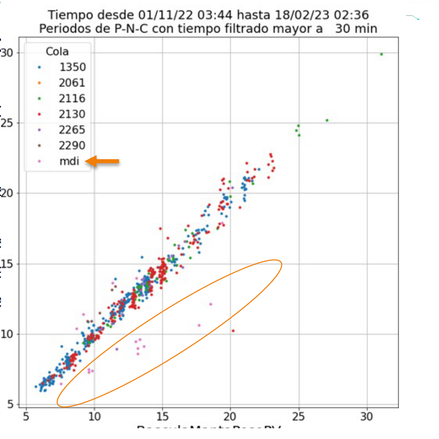
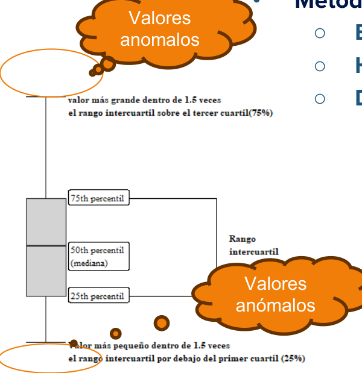
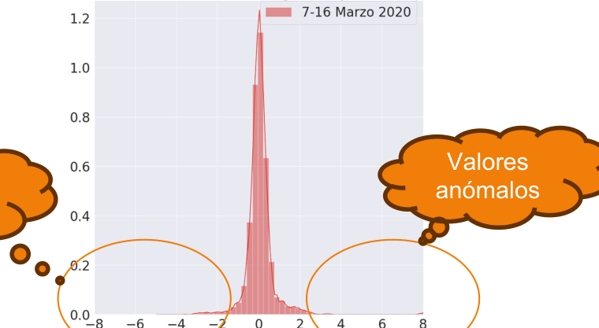

Preprocesamiento y análisis de datos
Temas de MYAD · 4/6
4.1 Datasets y entradas del aprendizaje
Un dataset es un conjunto de instancias (ejemplos), cada una descrita por un conjunto predefinido de atributos (características). En la práctica los datasets dan guerra por varios motivos, y cada uno da pie a una tarea de este tema:
- El número de atributos varía entre aplicaciones e incluso dentro de la misma, y la existencia de un atributo puede depender del valor de otro → preprocesamiento.
- Algunos atributos son poco o nada relevantes → selección de características.
- Los datos casi nunca se recogieron pensando en minarlos → problemas de calidad.
Las entradas de cualquier proceso de aprendizaje son tres:
- Concepto: la "cosa" que se quiere aprender; es el resultado del aprendizaje.
- Instancias: los ejemplos individuales e independientes del concepto (el elemento a clasificar, asociar o agrupar). Se describen con un conjunto fijo de atributos, su "estructura" puede cambiar según la tarea o el algoritmo, y tiene que haber suficientes para encontrar patrones.
- Atributos (features): las medidas que caracterizan una instancia. Simplificando, hay dos grandes grupos: categóricos (nominales u ordinales) y numéricos (continuos o discretos).
4.1.1 Por qué importa el tipo de cada atributo
Saber qué tipo tiene cada atributo y qué representa permite:
- Comparar bien: dos valores categóricos nominales sin orden (p. ej. colores) no se pueden comparar.
- Detectar valores no válidos: un atributo binario no puede valer algo distinto de 0 o 1.
- Gestionar faltantes: un año que falta entre otros años no se puede promediar sin más.
- Gestionar atípicos, que se tratan distinto en categóricos y numéricos.
- Elegir modelo: no todos aceptan todos los tipos. Una red neuronal no admite categóricos directamente, así que hay que transformarlos.
Los tipos son la restricción más básica; en un almacén de datos se pueden añadir muchas más para mejorar consistencia y calidad.
4.2 Fundamentos del preprocesamiento
La preparación de los datos se lleva gran parte del esfuerzo de todo el proceso de minería. No hay receta mágica para garantizar la calidad, porque depende de las fuentes, de los atributos y del momento en que se recogieron (los datos son una instantánea).
Por eso es vital estudiar los datos y hacer análisis estadísticos sobre ellos, y entender el dominio del problema. Cuanto más se conozcan datos y dominio, mejores decisiones: qué operaciones de preprocesado aplicar, qué algoritmos elegir y cómo interpretar los resultados. Se recomienda probar cada tarea de preprocesado por separado antes de montar el flujo completo.
Las cuatro tareas del preprocesamiento son:
| Tarea | Objetivo |
|---|---|
| Data cleaning (limpieza) | Eliminar datos con ruido, incorrectos o desconocidos (missing/nulos) |
| Data integration (integración) | Unir varias fuentes en un almacén coherente y homogéneo (un data warehouse) manteniendo la máxima calidad |
| Data transformation (transformación) | Convertir los datos en otros más útiles o adecuados para la minería |
| Data reduction (reducción) | Reducir el tamaño de la muestra, agregar y/o eliminar características |
4.3 Limpieza de datos
4.3.1 Datos desconocidos (missing)
Hay varias técnicas para tratar los valores que faltan:
- Eliminar la tupla: cuando lo que falta es la clase (la salida), cuando hay nulos en varios atributos o cuando el dataset es muy amplio y perder filas no importa.
- Corregir a mano: en general inabarcable.
- Constante global: sustituir cada ausente por, p. ej.,
"unknown". - Medida de centralización (media, mediana o moda), calculada con todos los valores del atributo o solo con los de las instancias de la misma clase (más afinado).
- Tratarlo como un problema de aprendizaje automático: predecir el valor que falta a partir de los demás atributos.
Ojo
Toda sustitución automática introduce un sesgo en los datos: el valor puesto puede no ser el correcto.
4.3.2 Ruido
El ruido es un error aleatorio en las variables medidas. No interesa y perjudica a los modelos. Se reduce suavizando los datos con una ventana (vecindario): cada valor se sustituye por la media o la mediana de sus vecinos. La media es sensible a valores extremos; la mediana es más robusta. El suavizado también se considera una operación de transformación.
Media vs mediana
En la ventana [12, 14, 13, 90, 15], la media es 28,8 (el 90 la arrastra) y la mediana es 14, que representa mucho mejor el vecindario.
La pregunta difícil es: ese valor raro, ¿es ruido o es un valor atípico legítimo?
4.3.3 Valores atípicos (outliers)
Un outlier es un dato estadísticamente inconsistente con los demás. Se asume que los datos "normales" siguen un patrón o proceso común; los atípicos son interesantes porque se sospecha que los generó un mecanismo diferente, y hay que encontrar una justificación para ellos.
No tienen por qué ser incorrectos (pueden ser muy valiosos, como un fraude), pero hay que detectarlos y decidir qué hacer, porque pueden condicionar el modelo final.

Los puntos rodeados se separan claramente de la tendencia lineal del resto.Detección
Hay muchísimos métodos (estadísticos paramétricos y no paramétricos, supervisados y no supervisados, univariados y multivariados…). Algunos:
- Clustering: al agrupar por similitud, los valores alejados de todos los grupos pueden ser atípicos, aunque no todo atípico es extremo.
- Regresión lineal: se ajusta la recta, se calcula el RMSE (raíz del error cuadrático medio) y los puntos cuyo error supera el RMSE se consideran atípicos.
- Métodos estadísticos: boxplot, histograma, distancia de Mahalanobis…

En un boxplot la caja va del percentil 25 al 75 (rango intercuartílico, RIC) con la mediana dentro; los bigotes llegan hasta el valor más extremo dentro de 1,5 × RIC, y lo que queda fuera son atípicos.
Hay tres tipos de outliers:
- Globales: muy lejos del resto en todo el conjunto.
- Contextuales: anómalos solo en un contexto (30 °C es normal en agosto pero raro en enero).
- Colectivos: un grupo de datos que es anómalo en conjunto aunque cada valor por separado no lo sea.
Tratamiento
Depende del caso:
- Eliminarlos, si hay muchos datos normales, su origen es dudoso o no hay tiempo para analizarlos.
- Eliminar la variable con más atípicos, valorando antes su importancia en el problema.
- Tratarlos por separado. Importante: los atípicos de un problema pueden ser los datos normales de otro.
4.4 Transformación de datos
Convertir los datos en otros más útiles para la minería:
- Suavizado (visto arriba).
- Agregación: ventas diarias → semanales → mensuales.
- Construcción de atributos: crear atributos nuevos a partir de otros. Facilita el trabajo al modelo, que ya no tiene que descubrir esa relación por sí mismo (p. ej. área a partir de altura y anchura; ganancia a partir de PVP y coste).
- Normalización: llevar los atributos a una escala común, para que uno con valores grandes no domine a los demás.
- Min-Max:
, que deja los valores en [0, 1]. - Z-Score (estandarización):
, con la media y la desviación típica; deja media 0 y desviación 1.
- Min-Max:
- Discretización: pasar valores continuos a discretos (edad en [0, 100) → menores, adulto joven, adulto, senior).
- Generalización (jerarquías conceptuales): sustituir valores por otros más genéricos, de un nivel de abstracción superior. "Calle" → ciudad, provincia, comunidad; "iphone" → "Smartphone" → "Electrónica".
Normalización con números
Edades [20, 35, 50, 80]:
| Edad | Min-Max | Z-Score |
|---|---|---|
| 20 | 0,00 | −1,18 |
| 35 | 0,25 | −0,51 |
| 50 | 0,50 | 0,17 |
| 80 | 1,00 | 1,52 |
Min-Max acota a [0, 1]; Z-Score dice a cuántas desviaciones de la media está cada valor (y es menos sensible a que un único extremo comprima todo lo demás).
4.5 Reducción de datos
4.5.1 La maldición de la dimensionalidad
Parecería que cuantos más atributos (dimensiones), mejor. A menudo no es así: al aumentar la dimensionalidad, el volumen del espacio crece exponencialmente y los datos quedan muy dispersos. Eso dificulta el entrenamiento y obliga a tener muchísimos más datos y más variados. Es la maldición de la dimensionalidad (curse of dimensionality), y por eso los modelos suelen mejorar al reducir dimensiones.
Analogía
Busca a un amigo en un pasillo de 100 m (1 dimensión): fácil. En un campo de fútbol de 100 × 100 m (2 dimensiones): mucho más difícil. En un edificio de 100 plantas (3 dimensiones): casi imposible. Con el mismo número de "datos" (personas buscando), cada dimensión extra deja el espacio más vacío.
4.5.2 Reducción de atributos
Selección de características (FS, Feature Selection): quedarse con los atributos más relevantes e ignorar el resto.
| Método | Cómo funciona |
|---|---|
| Filtrado | Ordena las características según una métrica estadística (p. ej. correlación) y descarta las peores; hay que fijar un umbral |
| Embebido | La selección va dentro del entrenamiento del modelo (p. ej. árboles de decisión) |
| Envolvente (wrapper) | Prueba combinaciones de atributos entrenando un modelo con cada una y elige el subconjunto con mejores resultados |
(En prácticas se verán con más detalle.)
Extracción de características: en vez de elegir atributos existentes, se crean menos variables nuevas, cada una combinación de las originales: PCA (Principal Component Analysis), LDA (Linear Discriminant Analysis)…
4.5.3 Reducción de instancias
Reducir el número de registros mediante muestreo (undersampling) o agregación.
4.x Ideas clave
- Entradas del aprendizaje: concepto, instancias y atributos (categóricos nominales/ordinales o numéricos continuos/discretos). El tipo condiciona comparaciones, validez, faltantes, atípicos y modelos admisibles.
- Preprocesar consume gran parte del esfuerzo; no hay receta, hay que conocer datos y dominio.
- Cuatro tareas: cleaning, integration, transformation, reduction.
- Missing: eliminar tupla, a mano, constante, media/mediana/moda (global o por clase), predecirlos. Toda sustitución automática sesga.
- Ruido: suavizar por ventana; la mediana es más robusta que la media.
- Outliers: no necesariamente erróneos; detección por clustering, regresión (RMSE), boxplot, histograma, Mahalanobis; tipos global, contextual, colectivo; eliminar, quitar la variable o tratar aparte.
- Transformación: agregación, construcción de atributos, Min-Max
, Z-Score , discretización, generalización. - Maldición de la dimensionalidad → reducir: selección (filtrado, embebido, wrapper) o extracción (PCA, LDA); menos instancias por muestreo o agregación.